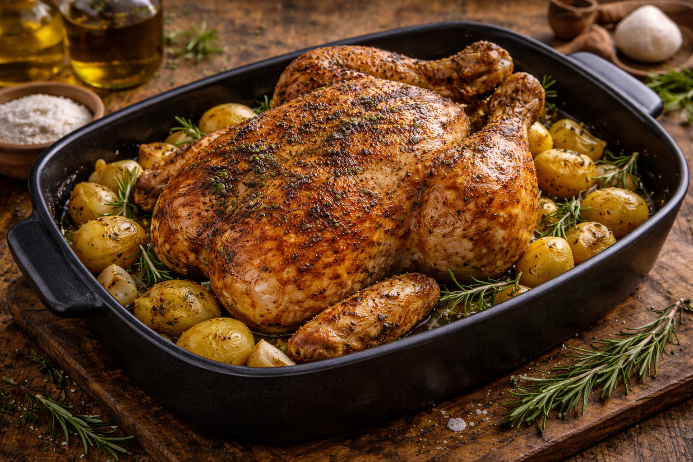

Un grand classique familial croustillant et savoureux qui plaît aux petits comme aux grands.
============================== PRÉPARATION ============================== 1. Préchauffer le four à 180°C. 2. Éplucher et hacher l’ail. 3. Déposer le poulet dans le plat. 4. Badigeonner avec l’huile d’olive. 5. Ajouter l’ail. 6. Saupoudrer de paprika et d’herbes. 7. Saler et poivrer. 8. Enfourner. 9. Cuire 1h15 en arrosant toutes les 20 minutes. 10. Vérifier que la peau est bien dorée. 11. Sortir du four. 12. Découper. 13. Servir chaud. 14. Accompagner de frites et de compote de pommes nature. ============================== INFORMATIONS ET CONSEILS ============================== Ce plat plaira à coup sûr aux enfants, je vous le garantis. Lorsque j’étais enfant, mes grands-parents venaient me chercher le mercredi après l’école avec mes cousines et ma sœur. Lorsqu’elle nous préparait du poulet rôti, c’était toujours accompagné de compote et de frites. Je ne me rappelle pas avoir vu des restes tellement nous nous régalions. Il n’y a même pas besoin d’ajouter une sauce type mayonnaise ou autre, mais vous pouvez bien sûr selon vos goûts. Vous pouvez aussi cuire des pommes de terre dans le plat avec le poulet : elles absorberont le jus de cuisson et auront un goût encore meilleur. Le poulet rôti est un plat familial convivial qui accompagne parfaitement les repas du week-end.